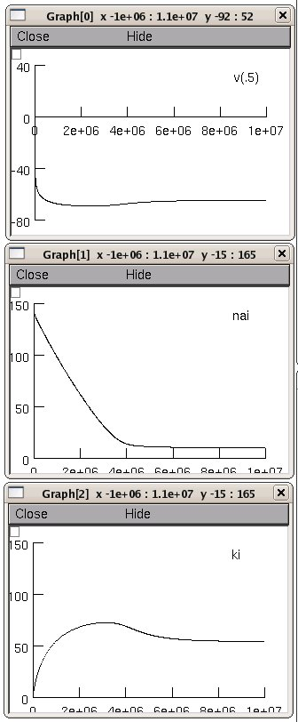

../nakpump.mod was for steady state pump currents under the assumption of constant nain, kin, and atp. nakpump1.mod modifies this so that nai, ki, and atps are STATEs that are computed in response to nakpump and other na and k channel currents. nakpump initializes the pump states to be in steady state with nai, ki, and atps clamped to nain, kin, and atp. The clamp efficacy for nai, ki, and atps thereafter are determined by the values of nasrcrate, ksrcrate, and atpsrcrate respectively (by default the former two are 0 (unclamped) and the latter is 1e9 (stronly clamped)). launching nrngui init.hoc shows a dialog choice for running Figures 1-12 in the parent folder or running a dynamic simulation showing the approach to steady state v, nai, and k from an initial condition of v=0, nai=nao, and ki=ko:  A steady state of nai = 10mM, and ki = 54mM was obtained by fitting gk_ionleak, gna_ionleak, and g_pas (probably overdetermined). Note that steady state v is determined by the value of e_pas.